Since I was a kid, I read Naruto, One Piece, Doraemon, Dragon Ball, Dr. Slump, and a ton of classics.
Now, I never considered myself a hard-core anime lover. Maybe it’s because of the “negative” association with it (weeb dx). Or maybe it’s just my internal thoughts messing with me.
But, in the past year, I’ve been watching a lot more anime. And I mean - A LOT MORE. I guess I just stopped caring about what other people think of me (tbh it’s hard). I can decide what I like and don’t like. I just like to watch anime!
So, I created this site to accomplish two things:
Brush up my basic semantic HTML & CSS skills
Share everything anime-related about me (watched, in progress, bucket list, favorites)
Lowkey I just want this to be a fun coding project lmao so please bare with me 😌
🔴 Beware: long article + there are some spoilers!
In Progress
To start off, here are a list of anime I’m currently watching/manga I’m reading:
Oshi No Ko (Idol)
Demon Slayer
One Piece
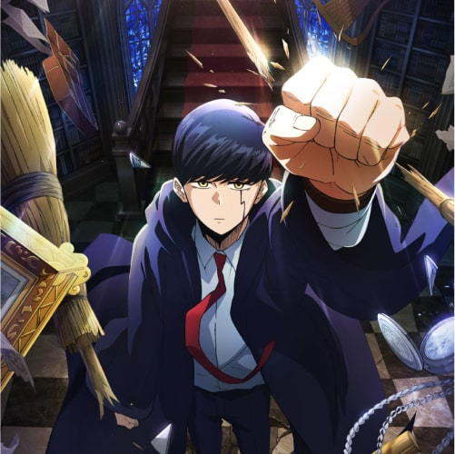
Mashle: Magic & Muscles
Black Clover
Hell's Paradise
Watched
Then, here are the anime I have watched so far.
Disclaimer: Compared to some of my friends, this is a baby list. But gonna keep watching lmaoo. Also, I did not include any anime movies in here.
To Your Eternity
Ranking of Kings
Odd Taxi
Bocchi the Rock
Made in Abyss
Summertime Rendering
The Promised Neverland
Cyberpunk Edgerunner
Violet Evergarden
Mob Psycho
Kaguya Sama
Spy x Family
Chainsaw Man
Demon Slayer
Jujutsu Kaisen
One Piece
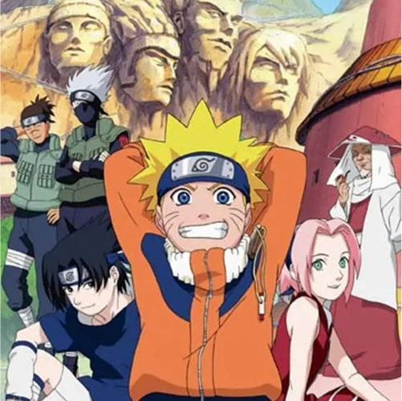
Naruto
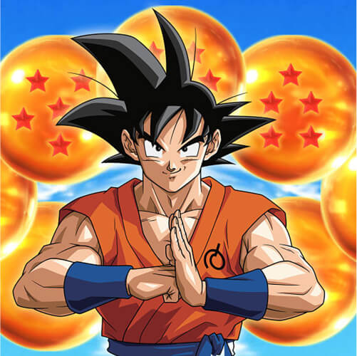
Dragonball
Dr.Slump
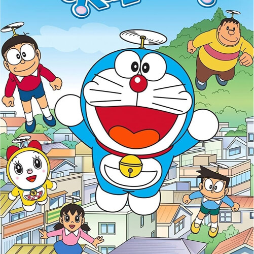
Doraemon
Detective Conan
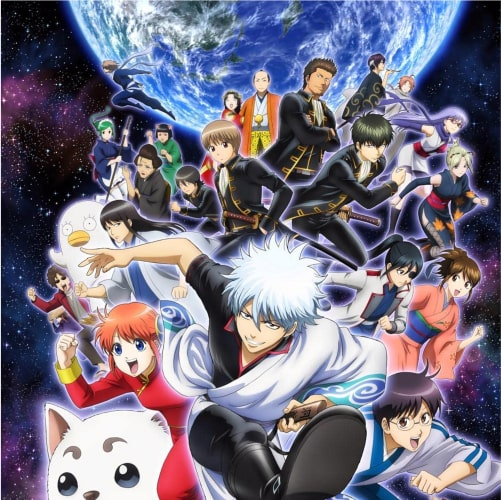
Gintama
Bucket List
Lastly, here are the anime I’m planning to watch. This is not in any particular order.
Lycoris Recoil
Hunter x Hunter
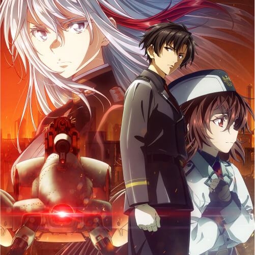
86
Yuru Camp
AOT (Attack on Titans)
Fullmetal Alchemist
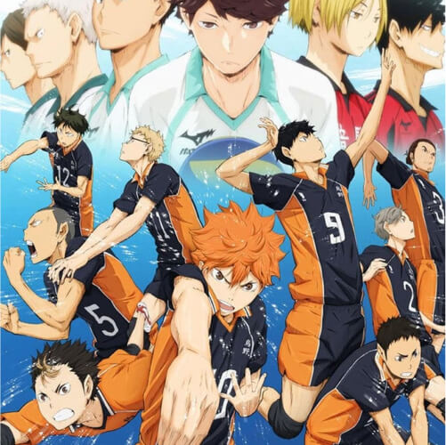
Haikyu
Tokyo Ghoul
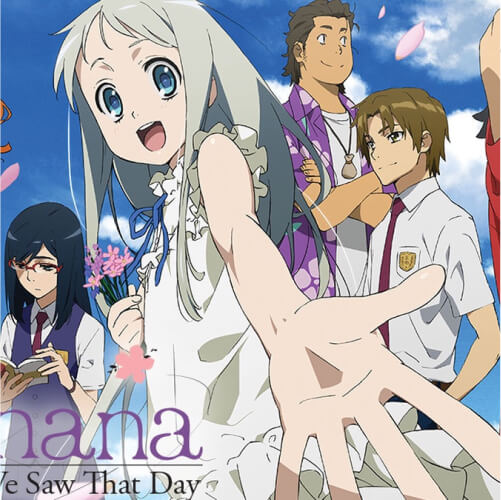
Anohana: The Flower We Saw That Day
Vinland Saga
Heavenly Delusion
Mushoku Tensei
Link Click
Blue Lock
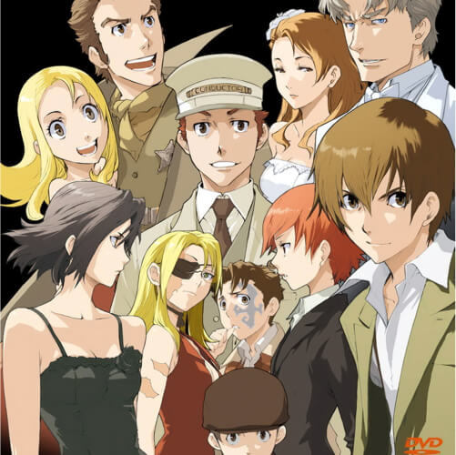
Baccano
Food Wars
Komi Can't Communicate
Stein's Gate
Mobile Suit Gundam the Witch from Mercury
My Top 5 (So Far) + Honorable Mentions
Okay actually this is a bit cheating because I have more than 5 in this “top 5” list. You’ll see why.
At the moment, what I value in an anime is this:
Do I feel something after watching it?
You can call it impact, underlying message, the feels, or whatever make sense.
Now, this doesn’t mean I don’t care about the art style, storyline, character development, etc. In fact, I value those greatly. I do take everything into account.
It’s just that for me - the feels is a huge bonus.
Now, before we get into it, I want to mention some honorable mentions.
Honorable Mention 1: To Your Eternity
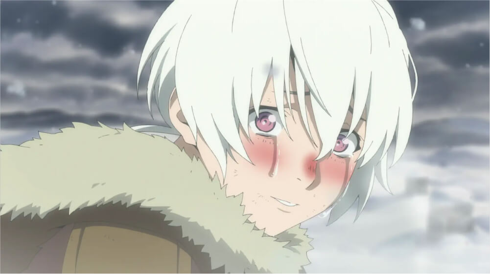
The only reason “To Your Eternity” is not in my top 5 is:
I just wasn’t that invested after Gugu’s scene.
Don’t get me wrong - I “felt” it in both March & Gugu’s stories, especially March. It was soul-wrenching.
The art is gorgeous, and the anime concept is unique. Maybe it’s just the feeling didn’t carry out in the remaining of season 1 and season 2.
Honorable Mention 2: The Promised Neverland Season 1
Is...someone going to jump out behind them?
The Promised Neverland is one of those anime that kept me on the edge of my seat. The “moms” were so damn creepy. And the whole backstory is creepy.
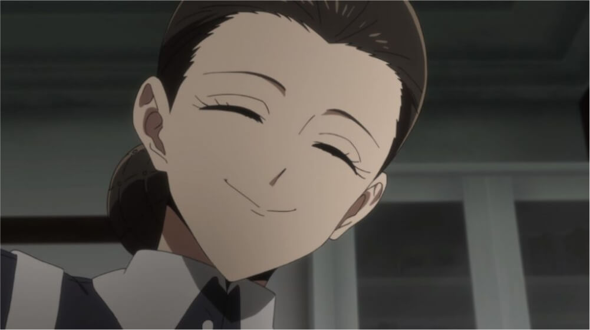
That smile...
There’s just a luring sense of creepiness in this anime. And it’s illustrated so well.
However, the only drawback is the Season 2 anime. I’m sure that, at this point, it’s pretty unanimous that season 2 anime was a tragedy.
The manga was good, but at that point, I lost faith in it. Still, season 1 anime was incredible.
Honorable Mention 3: Naruto, One Piece, Black Clover, Demon Slayer
It was hard to put these on my top 5. Not because I don’t like them. These are special anime to me - especially Naruto and One Piece.
But, these are the ones I consider “extremely long” anime. The result of its length is that there are inevitably boring segments.
So I guess these deserve a separate category of “long anime that I like.” Not sure. I just felt like the need to acknowledge them in some way because they were important to me.
Now, with those mentions, let’s get into my top 5.
No.5 - Violet Evergarden ✉️ / Made in Abyss 🗻
Boom - 2 number 5 picks. Oops.
In all honesty, this was extremely hard.
For me, Violet Evergarden brings a bit of nostalgic value. It was my first entryway into “non-mainstream” anime (Naruto, One Piece, etc).
And man was it a beautiful ride. Violet Evergarden has arguably the most beautiful art style I have ever seen.
Just look at this art 🥺
But, what I think is most special about it is that it questions the subtle & “normal” things that we as humans do, such as detecting the underlying message behind someone’s words.
On the other hand, Made in Abyss is also beautiful, but more in the sense of fantasy-beautiful. There are so many out-of-this-world concepts and some…very dark ones too.
The scene where one of the main characters got hurt (iykyk). That was horrific…
And I want to say - Bondrewd is one of the most well-designed and disgusting villain I’ve ever seen. I say well-designed because I felt bit of sadness when he died (?).
In short, it’s just hard to pick. So number 5 goes to both.
No.4 - Summertime Rendering 🔫
Oof this was SO DAMN GOOD.
Definitely one of my top mystery anime so far. There were so many unexpected bits & storylines. And I remember being on the edge of my seat for so many episodes.
But, I instantly knew this would be one of my favorites at this moment:
When I realized how satisfying the last episode felt.
Just look at them... They definitely did not go over hardship...right?
And that was also when I realized how absorbed I was in the anime and, of course, all the tension, drama, and build-ups. It’s incredible.
iykyk 😬
BUT! Quick caveat - I do feel like the villain near the end of the anime is way too shallow and the battle scenes took me out of it. But regardless, still one of my favs!
No.3 - Bocchi the Rock 🎸 / Kaguya Sama 💘
Oh man - can I just say:
Bocchi is every introvert’s ultimate form.
The team went all out on Bocchi's chaos 😂
I’m an introvert, and it’s SO SATISFYING to see Bocchi just … be herself. All the awkwardness, avoidance, and nuisances - lovely.
Not to mention: all the songs are incredible. I’m still listening to some of my favorites up to this day:
カラカラ
ギターと孤独と蒼い惑星
青春コンプレックス
星座になれたら
OH YA - I’m purchasing a guitar this summer too. Mainly inspired by Bocchi the Rock. There are so many anime / J-Pop songs I want to learn 😭
Now, let’s talk about Kaguya Sama.
The best rom-com anime ever. Well, this might be very biased because this is literally the only one I’ve watched. But man was Kaguya Sama good.
What I thought was just a simple romantic drama turned into…more of a mind battle tbh. It’s all about the little, subtle details. It’s all about who makes the move first. It’s all about the use of words.
To see who wins in this game called love.
Also, the ending of season 3 is one of the most epic endings I’ve seen. Masterpiece.
Not to mention - the movie was amazing too. A very satisfying ending indeed. And one that makes me cry a bit inside knowing that there won’t be any more Kaguya Sama anymore…
THEY'RE SO CUTE 🥺
No.2 - Ranking of Kings 👑
I admit - at first I was like
Is this an anime about a kid? How will this be interesting?
And man I was wrong.
In my opinion, the beauty of “Ranking of Kings” is the character design.
There were so many moments in this anime where I was like
Hmm, this character seems very stereotypical… Hmm, wait actually…. Oh man, I did not expect that and I’m so glad I now understand this character a lot more.
OP as hell
Also, Boji is such a fascinating character. I just can’t stop rooting for him. It feels damn good to see him succeed. And I LOVE the duo of Boji and Kage.
This scene...😭😭😭
If you want an extremely heart-warming anime with ups and downs, then Ranking of Kings is the one for you. It will warm your heart at the very end.
And now…let’s talk about my number 1.
No.1 - Cyberpunk Edgerunner 👾
Oh man. Oh man. This one is a special one.
Out of all of the anime I’ve watched, this was the one that made me “feel” the most. The impact was…oof...
I couldn’t stop thinking about the anime for four days after watching it.